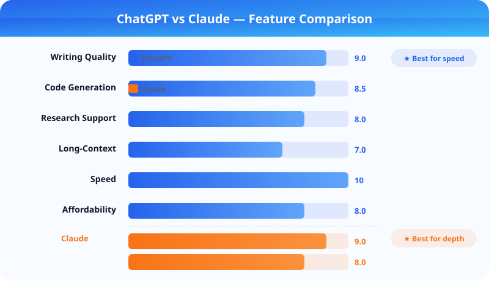

How We Review AI Tools — Editorial Methodology
Not every AI tool fails in the same way. Some generate fast but unreliable output. Others reason more carefully but move too slowly for real workflows. A useful review framework isolates those tradeoffs so you can match the tool to your actual environment — whether you are a solo creator, a marketing team, or a development shop shipping production code.
This page explains the methodology behind every review published on KnowAITool. We follow the same structured process whether we are testing writing assistants, image generators, coding copilots, or productivity apps. Consistency across categories is what makes our comparisons reliable.

Why a review framework matters
AI tools are difficult to compare because marketing demos hide the constraints that shape daily usage. Prompt quality, dataset size, language support, latency, and debugging depth all change the experience. We treat every review as a workflow evaluation rather than a feature checklist.
A framework also protects against bias. By scoring every product against the same criteria using the same test prompts and task types, we reduce the risk that a well-branded product scores higher simply because it has better marketing. The framework does not replace editorial judgment, but it ensures that judgment is applied consistently.
Key Takeaways
- Every tool is scored across five consistent dimensions — output quality, usability, workflow depth, pricing clarity, and trust
- We test on real tasks, not vendor-supplied demos or scripted walkthroughs
- Speed is not always an advantage — faster tools often require more manual correction
- Ratings are reviewed quarterly to account for model updates and feature changes
Our five scoring dimensions
Each tool receives a score from 1 to 10 in five areas. These scores are averaged into an overall rating, but we always publish the breakdown so readers can weigh the dimensions that matter most to their use case.
- Output quality (30% weight): Accuracy, coherence, and consistency across repeated tasks with the same prompt. Does the tool produce reliable results or does quality vary widely between runs?
- Usability (20% weight): How fast a new user can produce useful results without reading documentation. We measure time-to-first-output and the number of attempts needed to reach an acceptable result.
- Workflow depth (20% weight): Whether the tool supports real editing, revision, and collaboration, not just first-draft generation. Does it integrate with how teams actually work?
- Pricing clarity (15% weight): Whether the free tier is genuinely useful for evaluation and whether the paid tier delivers clear incremental value. We flag plans that hide essential features behind paywalls.
- Trust (15% weight): Transparency around data usage, privacy controls, content retention policies, and model limitations. For enterprise tools, we also evaluate compliance certifications.
How we test each category
Every category uses a standard test suite designed to surface the tradeoffs that matter most for that type of tool. Below is a summary of what we test in each area.
AI writing tools
We test long-form drafting, outline generation, intro rewriting, product comparison writing, and editorial refinement. Each tool gets the same three source documents and the same five prompt types. We measure draft quality, adherence to tone instructions, and how many manual edits are needed before the output is publishable.
AI image generators
We run five standardized prompts covering photorealism, product mockups, artistic styles, character consistency, and text rendering. Each output is evaluated on prompt alignment, image quality, resolution limits, and generation speed. We also document watermark policies and commercial usage terms for every free and paid tier.
AI coding assistants
We test first-run onboarding, small bug fixes, file-level refactors, code explanation quality, and how well the assistant recovers from ambiguous requirements. The goal is to understand whether the product saves time once the easy tasks are gone. We track how often outputs need correction, whether test failures are understood, and how much supervision is required before code is safe to merge.
AI productivity and SEO tools
For productivity apps, we evaluate meeting summarization accuracy, task extraction reliability, and integration depth with common platforms. For SEO tools, we assess keyword research quality, content scoring consistency, SERP analysis depth, and whether the tool produces actionable recommendations or generic checklists.
Accuracy versus speed
A tool that replies quickly is not always the better choice. High speed with low reliability usually creates negative leverage — you save time on generation but lose more time on verification and correction. Our reviews call this out explicitly, especially in categories where accuracy directly affects business outcomes.
Signals we track across all categories
- Does the tool respect existing context and user instructions across a session?
- Can it follow multi-step instructions without drifting or forgetting earlier constraints?
- Does it explain uncertainty when context is incomplete or when the request is ambiguous?
- How much manual correction is typically needed before output is usable?
Editorial safeguards and trust
We maintain strict editorial independence from tool vendors. No payment, partnership, or affiliate relationship influences our scores or recommendations. Reviews are written and scored by the editorial team without vendor preview or approval.
We also review our ratings quarterly. AI tools update frequently, and a score that was accurate six months ago may no longer reflect the current product. When a significant update changes our assessment, we publish a revised review with a clear changelog noting what changed and why.
Affiliate links are clearly disclosed on every page where they appear. These relationships help fund the site but never determine editorial direction. If a tool is weak, limited, or overpriced, the review will say so plainly — regardless of affiliate status.
Related Articles